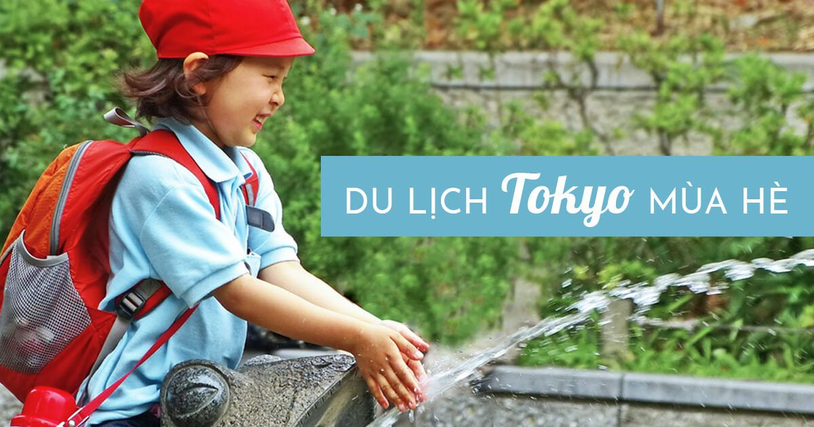
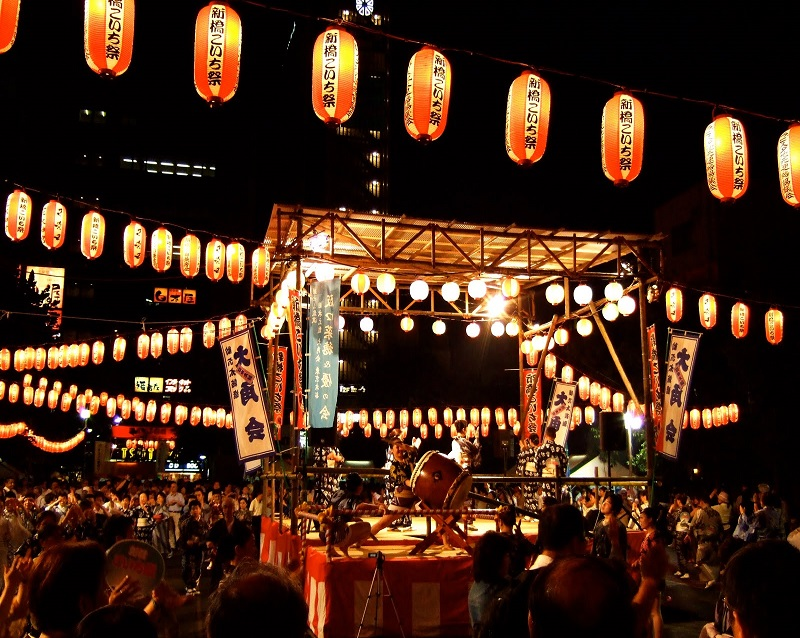
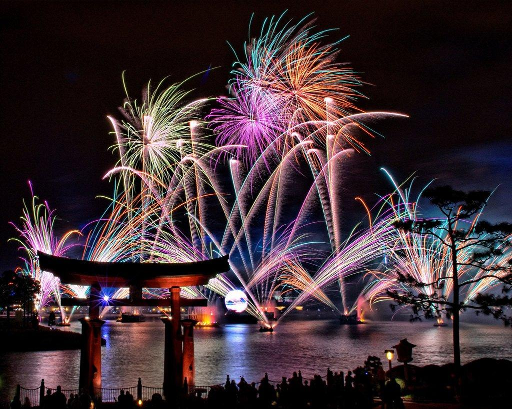

Du lịch mùa Hạ
Thưởng thức mùa hè với hương sắc của những cánh hoa rực rỡ. Không hề kém cạnh so với mùa hoa anh đào, mùa hè ở Nhật nổi tiếng với nhiều loài hoa đẹp, tươi sáng tạo nên những cánh đồng hoa tuyệt vời trên khắp cả nước.
Ở Nhật Bản mùa hè còn được coi là mùa lễ hội, bởi lẽ vì vào mùa hè ở Nhật lễ hội luôn được diễn ra liên tục trên khắp cả nước, những nổi tiếng nhất có lẽ làlễ hội múa OBON. Múa Obon là bài múa cổ truyền được gìn giữ lâu năm cho đến ngày nay.
Không kém cạnh lễ hội múa Obon,lễ hội pháo hoa hay còn gọi là hanabi cũng là một trong những lễ hội được người dân Nhật Bản yêu thích nhất. Lễ hội pháo hoa thường được tổ chức theo từng khu vực, mỗi lần diễn ra lễ hội pháo hoa thời gian thường được kéo dài từ 30 phút tới 1 tiếng đồng hồ. Với những màn trình diễn pháo hoa độc đáo kèm theo nhạc nền theo mỗi bài trình diễn của lễ hội, đó sẽ là một thiếu sót nếu bạn không tham gia khi đến nhật du lịch vào mùa Hè.

Đối với những bạn trẻ yêu thích xứ sở Pokemon thì chuyến du lịch mùa hè tại Nhật Bản sắp tới chắc chắn bạn không được bỏ qua. Diễu hành Pokemon là màn trình diễn vào mỗi dịp hè đến tại thành phố cảng YOKOHAMA Nhật Bản. Tại đây mọi người có thể đắm chìm mình vào thế giới Pokemon với những món đồ được tạo hình pokemon, từ món ăn đến đồ dùng..., ngoài ra vào khung giờ 19 giờ hàng tuần chúng ta còn có thể ngắm nhìn màn diễu hành của những chú Pikachu đáng yêu nối đuôi nhau đi khắp thành phố cảng YOKOHAMA.

Nhật Bản được bao quanh bởi biển, chính vì điều này Nhật bản cũng là nơi mà bạn nên đến vào mùa hè. Ngoài những lễ hội ra, vào mùa hè bãi biển tại Nhật Bản cũng là địa điểm bạn nên đến. Với làn nước biển trong xanh bạn có thể tha hồ thỏa thích ngắm nhìn và đắm chìm trong làn nước mát của biển cả với những dải cát trắng kéo dài.